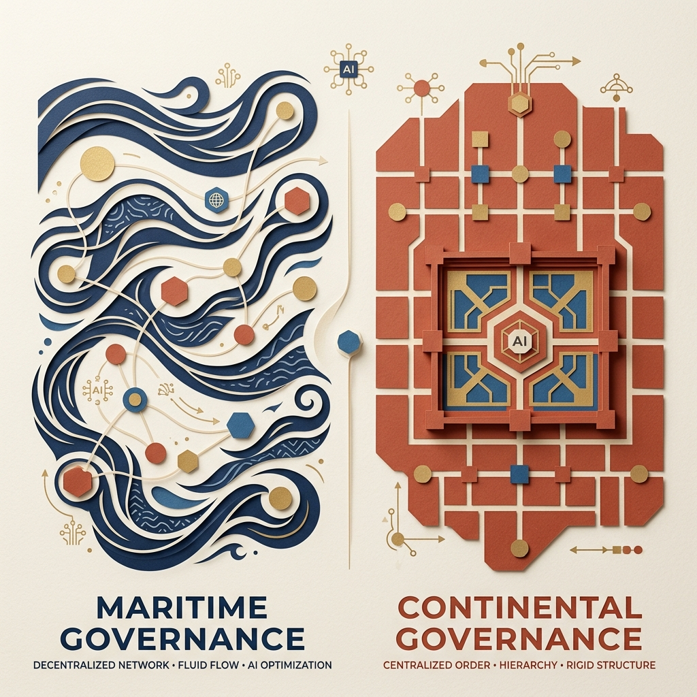

Maritime vs. Continental Governance Paradigms in the Age of AI

The respective political cycles of maritime and continental powers shed significant light on our current technological trajectory. Maritime regions, such as Western Europe, have historically wobbled between distributed democratic systems and centralised ideological structures—from the Roman Empire through the Dark Ages, the medieval period, the Renaissance, the Papal States, fascism, and modern democracy. Each state was mostly stable in its era, but Europe has consistently performed best when given freedom and distributed operational autonomy.
China presents a fundamentally different case. Its historical cycle wobbles between central bureaucracy and total chaos—the Warring States periods, the years of turmoil, the Taiping Rebellion, the Ming Dynasty, communism, and modern China. For China, central planning has generally been more effective to the extent it can handle it, because decentralization historically led to fragmentation. This was not the case in Europe.
Defining the Paradigms: Internal vs. External Governance
It is easy to assume we are shifting permanently from a maritime to a continental paradigm, but the underlying mechanics are subtle:
- Maritime Dynamics: Rely on power exertion overseas in a collaborative, networked manner. The region dealt with outside the border is more critical than the region inside. Maritimes rely on actors they cannot directly govern.
- Continental Dynamics: Rely on internal control whose centralized governance dictates what occurs outside its borders. Continentals rely on actors they can directly govern.
Viewed through this lens, the value of centralisation versus decentralisation becomes clear: maritimes rely on those they cannot govern; continentals on those they can.
The Current AI State: Continental Humanity, Maritime AI
Artificial intelligence is currently consolidating knowledge, expanding the border over which we govern innovation. However, it is also accelerating operational execution at a much faster pace. It expands who we can govern, while simultaneously enabling external systems to become too complex to govern directly.
In our present phase, the AI system itself is the entity we cannot fully govern: Continental humanity, maritime AI.
The Next Governance Horizon: Maritime Humanity, Continental AI
This state is not static. Information consolidation hits natural physical and computational limits. As we approach a point where the complexity of human organization explodes, the AI models available to any single actor will become bounded in their useful operational range. Simultaneously, human networks will once again leverage organizational power beyond centralized remits.
We will transition into the next cycle: Maritime humanity, continental AI.
We are entering new cycles of governance, technology, and economics unlike anything seen in human history. Navigating these cycles will require building adaptive, resilient, and decentralised system architectures.
Originally published on LinkedIn — view the original post and discussion on LinkedIn ↗.